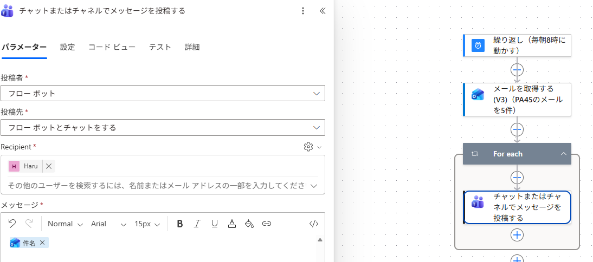
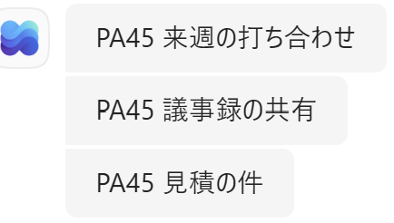
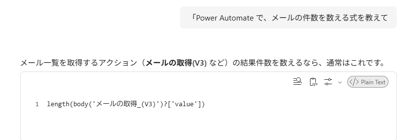
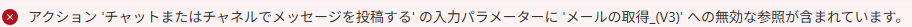

Haru
💻 Power Platform / DX 推進
- 🏢 社内で PA／Copilot ハンズオン講座を開催し、DXを推進
- 🎤 広島コミュニティ「PLUG」運営・外部コミュニティ登壇
- 📱 X で初心者向け Power Automate チップスを継続発信
- 🕐 PA45（45分の "1粒ハンズオン"）を毎週開催・運営
今日も一緒に「できた！」を作っていきましょう 😊
 オートさん「毎朝10分、件名を書き写しています」
オートさん「毎朝10分、件名を書き写しています」
 オートさん「今日は5つの章で進みます」
オートさん「まずは練習用のメールを3通送る」オートさん「毎朝8時に、勝手に動くようにする」オートさん「PA45のメールだけ取ってくる」オートさん「動いた！ 全部緑になった」オートさん「件名を選んだだけなのに…」
オートさん「今日は5つの章で進みます」
オートさん「まずは練習用のメールを3通送る」オートさん「毎朝8時に、勝手に動くようにする」オートさん「PA45のメールだけ取ってくる」オートさん「動いた！ 全部緑になった」オートさん「件名を選んだだけなのに…」

オートさん「課長がほしいのは、まず件数だ」オートさん「件数がどこにも無い…」オートさん「そうだ、Copilot に聞こう」オートさん「コピーした式を、Teams の本文に入れる」オートさん「Copilotの式を貼ったら、エラー…」
メールの取得_(V3)メールを取得する_(V3)
オートさん「何が返ってきているのか、見てみよう」オートさん「出力を開いてみた。長い…」オートさん「見るところは3か所だけだった」オートさん「件名は棚に並んでいた。だから3通に！」オートさん「{ } と [ ] の見分け方を思い出す」オートさん「左から箱を開けていけばいい」オートさん「出力を上からたどると、そのまま式になる」オートさん「3通になった原因は、For each だ」
オートさん「1通になった。しかも「3件」と出た！」オートさん「件数も1件目も、式なら取れた」オートさん「1行足すたびに、ちゃんと出るか確かめる」オートさん「出力を見せて聞いたら、名前が合った」オートさん「課長がほしい2つが、1通で届いた」